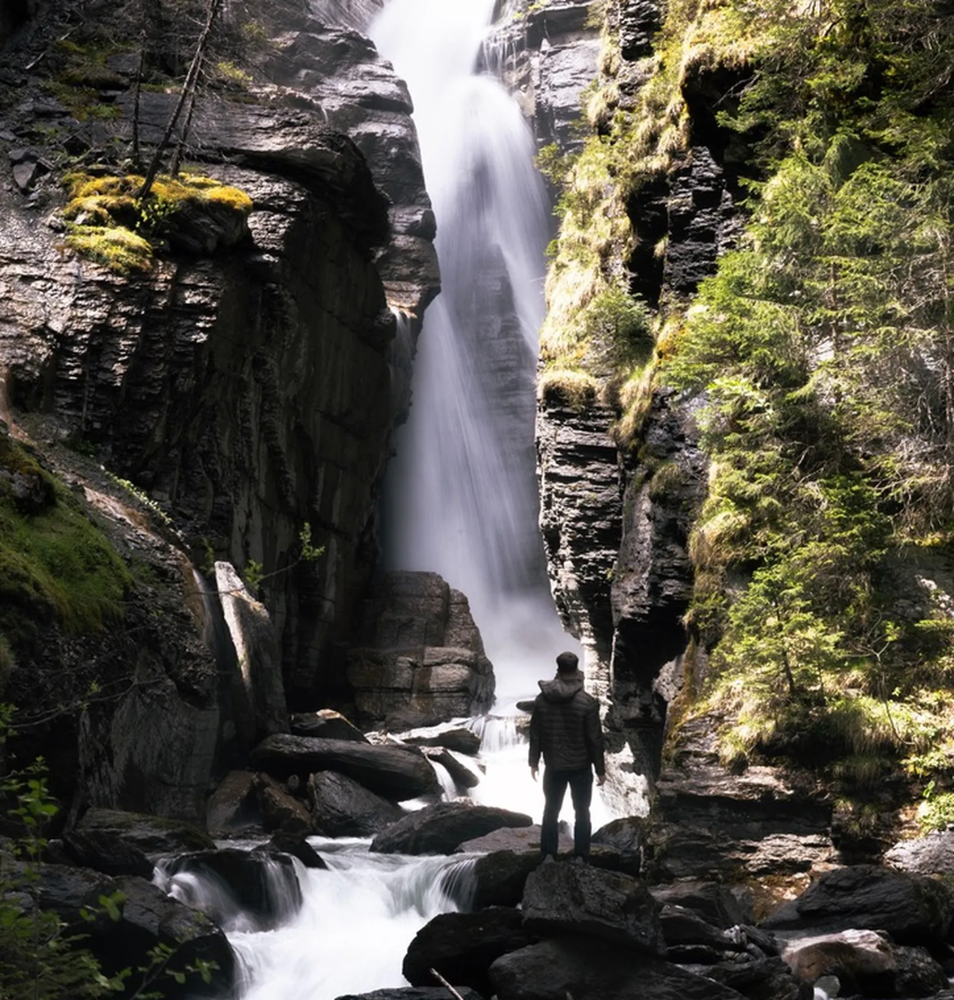

Photo · @leon.helgWATERFALLS
A waterfall hidden behind Hotel Rosenlaui, fed by the Rychenbach. Almost empty most mornings.
Fed by the Rychenbach. Access is through the grounds of Hotel Rosenlaui, so be quiet and respect the property and guests.
Wear a colourful jacket. Otherwise you will disappear into the dark rock in the photo. Even a small splash of red or orange changes the composition completely.